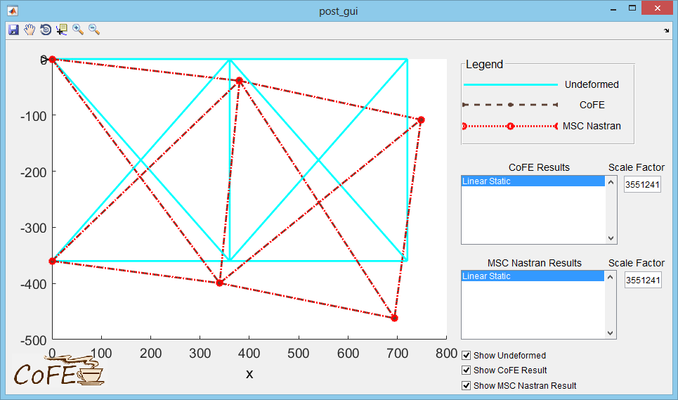
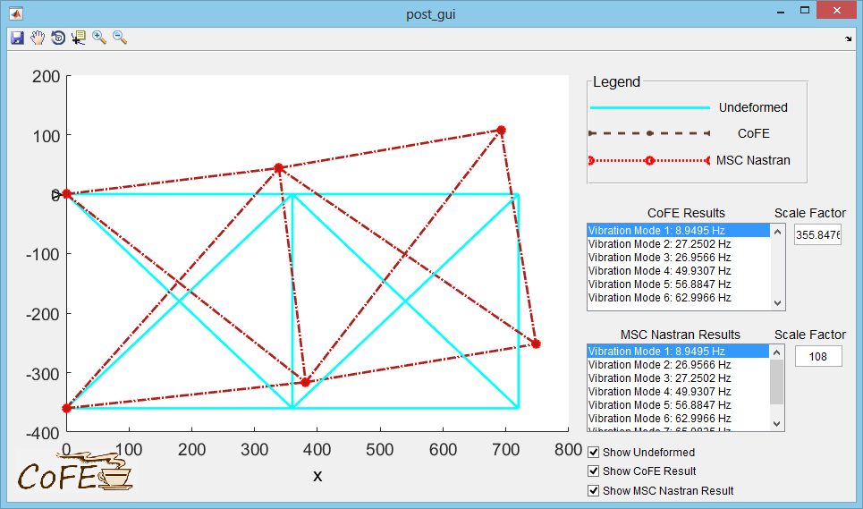
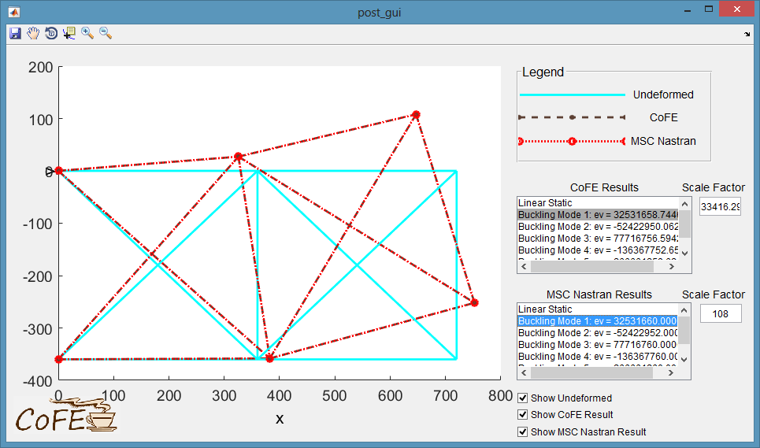

The ten bar truss model was developed by Venkayya for:
Venkayya, V. B. (1971). "Design of Optimum Structures," Computers & Structures, 1(1), 265-309.
Example CoFE input files for this page are provided here:
NASTRAN_CoFE/CoFE_examples/a1_tenBarTrussAnalysis/
MSC Nastran verification files are provided here:
NASTRAN_CoFE/CoFE_examples/a1_tenBarTrussAnalysis/NASTRAN_comparisons/
Open the tenbar_analysis.m file and check that the SOL variable is set to 101. Run the script. The postprocessor GUI will show the linear static response compared to the response from MSC Nastran.
CoFE element forces printed to the tenBar_analysis.c06 output file:
F O R C E S I N R O D E L E M E N T S ( C R O D )
ELEMENT AXIAL ELEMENT AXIAL
ID. FORCE TORQUE ID. FORCE TORQUE
1 +1.493947E+00 +0.000000E+00 2 +5.524035E-01 +0.000000E+00
3 -1.506053E+00 +0.000000E+00 4 -4.475965E-01 +0.000000E+00
5 +4.635013E-02 +0.000000E+00 6 -4.475965E-01 +0.000000E+00
7 +7.156676E-01 +0.000000E+00 8 -6.985460E-01 +0.000000E+00
9 +6.329970E-01 +0.000000E+00 10 -7.812166E-01 +0.000000E+00
exactly match MSC Nastran element force output printed in /NASTRAN_comparisons/l_static.f06:
F O R C E S I N R O D E L E M E N T S ( C R O D )
ELEMENT AXIAL ELEMENT AXIAL
ID. FORCE TORQUE ID. FORCE TORQUE
1 1.493947E+00 0.0 2 5.524036E-01 0.0
3 -1.506053E+00 0.0 4 -4.475965E-01 0.0
5 4.635013E-02 0.0 6 -4.475965E-01 0.0
7 7.156676E-01 0.0 8 -6.985459E-01 0.0
9 6.329970E-01 0.0 10 -7.812166E-01 0.0
Additionally, CoFE element stresses in tenBar_analysis.c06:
S T R E S S E S I N R O D E L E M E N T S ( C R O D )
ELEMENT AXIAL TORSIONAL ELEMENT AXIAL TORSIONAL
ID. STRESS STRESS ID. STRESS STRESS
1 +1.567329E-01 N/A 2 +5.795375E-02 N/A
3 -1.580030E-01 N/A 4 -4.695823E-02 N/A
5 +4.862684E-03 N/A 6 -4.695823E-02 N/A
7 +7.508210E-02 N/A 8 -7.328584E-02 N/A
9 +6.640897E-02 N/A 10 -8.195898E-02 N/A
exactly match MSC Nastran element stresses printed in /NASTRAN_comparisons/l_static.f06:
S T R E S S E S I N R O D E L E M E N T S ( C R O D )
ELEMENT AXIAL SAFETY TORSIONAL SAFETY ELEMENT AXIAL SAFETY TORSIONAL SAFETY
ID. STRESS MARGIN STRESS MARGIN ID. STRESS MARGIN STRESS MARGIN
1 1.567329E-01 0.0 2 5.795375E-02 0.0
3 -1.580030E-01 0.0 4 -4.695823E-02 0.0
5 4.862684E-03 0.0 6 -4.695823E-02 0.0
7 7.508210E-02 0.0 8 -7.328583E-02 0.0
9 6.640896E-02 0.0 10 -8.195898E-02 0.0
Change the SOL variable to 103 and run the script. The postprocessor GUI will show the first vibration mode shape compared to the result from MSC Nastran.
The response has near perfect agreement with MSC Nastran. Other available results can be selected from the list boxes in the GUI.
Change the SOL variable to 105 and run the script. The postprocessor GUI will show the buckling mode shapes compared to the results from MSC Nastran.
The postprocessor GUI will initially show the linear static response to the applied reference load. Buckling modes can be selected in GUI list boxes. The response has near perfect agreement with MSC Nastran.